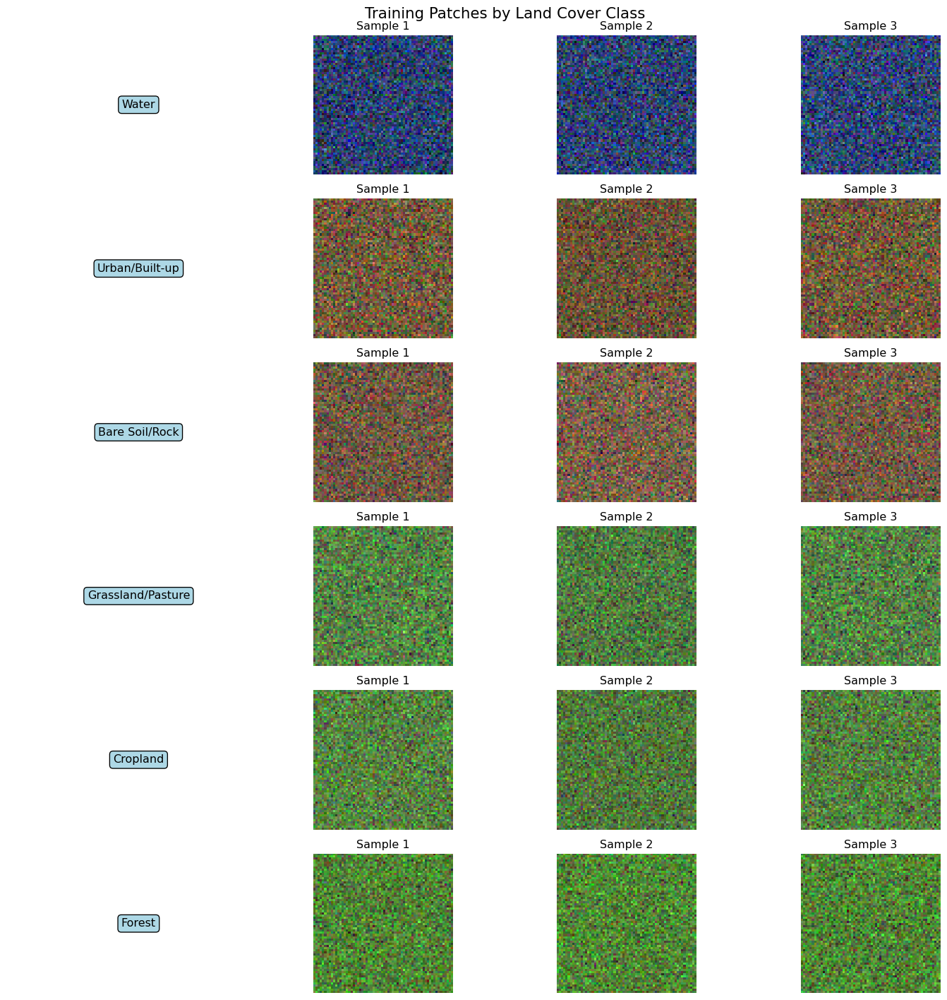
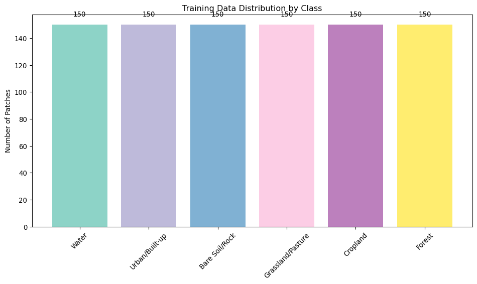
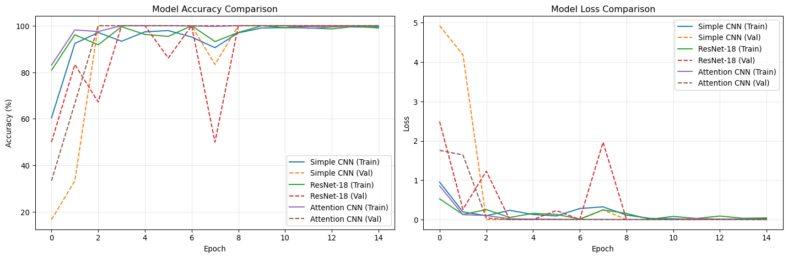
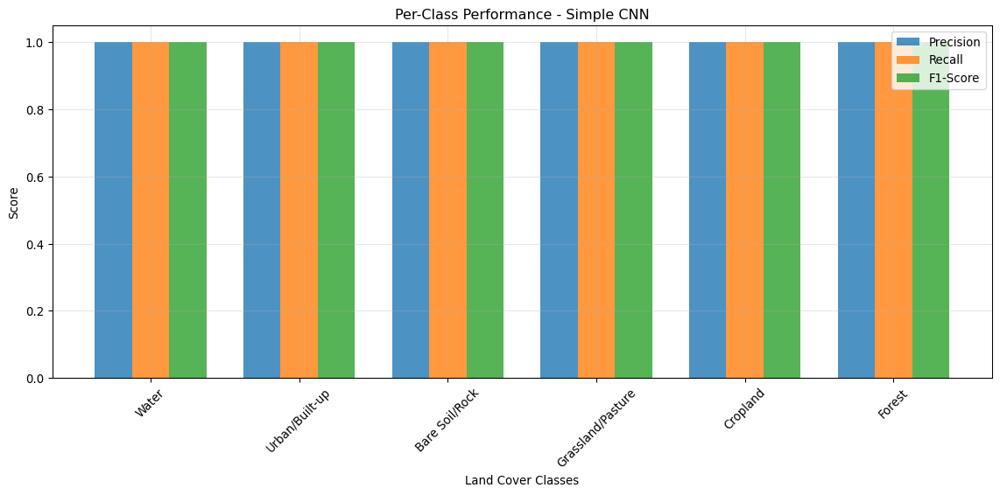
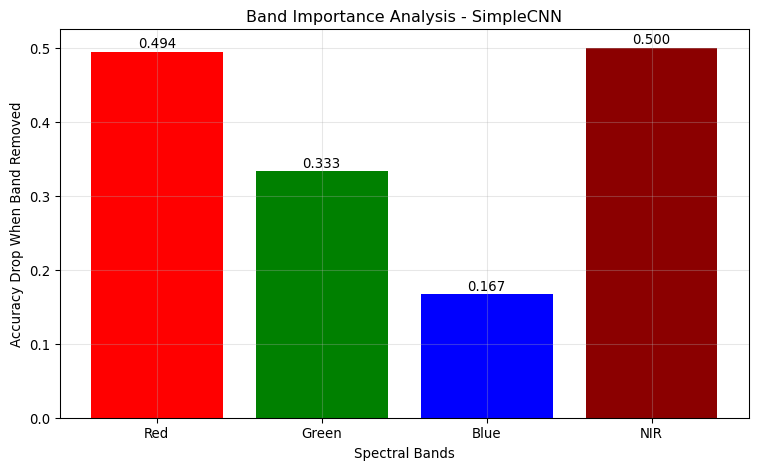

Training CNNs on land cover patches from satellite imagery
Introduction
This week we’ll train convolutional neural networks on real satellite imagery for land cover classification. You’ll experience the complete machine learning workflow: from patch extraction to model evaluation.
Learning Goals
By the end of this session, you will: - Extract training patches from preprocessed satellite data - Create labeled datasets for supervised learning - Build and train multiple CNN architectures - Compare model performance and interpret results - Understand the end-to-end ML workflow for remote sensing
Session Overview
Today’s hands-on machine learning pipeline:
Step
Activity
Tools
Output
1
Patch extraction from data cubes
numpy, sklearn
Training patches
2
Dataset creation and labeling
PyTorch, TorchGeo
Labeled datasets
3
CNN architecture comparison
PyTorch, torchvision
Multiple models
4
Training and validation
PyTorch, matplotlib
Trained models
5
Performance evaluation
sklearn, seaborn
Model comparison
Step 1: Patch Extraction from Preprocessed Data
Let’s start by extracting training patches from the data cubes we created in Week 2.
Load Preprocessed Data
import warningswarnings.filterwarnings('ignore')# Core librariesimport numpy as npimport pandas as pdimport xarray as xrimport matplotlib.pyplot as pltimport seaborn as snsfrom pathlib import Pathfrom sklearn.model_selection import train_test_splitfrom sklearn.metrics import classification_report, confusion_matrix, accuracy_scorefrom sklearn.preprocessing import LabelEncoder# Deep learningimport torchimport torch.nn as nnimport torch.optim as optimimport torch.nn.functional as Ffrom torch.utils.data import Dataset, DataLoader, TensorDatasetimport torchvision.transforms as transformsfrom torchvision.models import resnet18, resnet34# Geospatialimport rasterioimport rioxarrayprint("🔧 Libraries loaded for machine learning on remote sensing")# Check if we have preprocessed data from Week 2data_dir = Path("week2_preprocessed")if data_dir.exists(): cube_files =list(data_dir.glob("*cube*.nc"))if cube_files: cube_path = cube_files[0]print(f"📦 Loading data cube: {cube_path.name}") datacube = xr.open_dataset(cube_path)print(f"✅ Data cube loaded with shape: {datacube.dims}")else:print("⚠️ No data cube found, creating synthetic data for demonstration") datacube =Noneelse:print("⚠️ No preprocessed data directory found, creating synthetic data") datacube =None
🔧 Libraries loaded for machine learning on remote sensing
⚠️ No data cube found, creating synthetic data for demonstration
Create Training Data from Real or Synthetic Imagery
def create_training_patches(datacube=None, patch_size=64, n_patches_per_class=200):""" Extract training patches for land cover classification. Args: datacube: xarray Dataset with satellite data patch_size: Size of patches to extract n_patches_per_class: Number of patches per class Returns: patches: Array of patches (N, C, H, W) labels: Array of class labels class_names: List of class names """# Define land cover classes class_names = ['Water','Urban/Built-up','Bare Soil/Rock','Grassland/Pasture','Cropland','Forest' ] n_classes =len(class_names) n_bands =4# RGB + NIRif datacube isnotNone:# Use real data from datacubeprint("🌍 Using real satellite data for training patches")# Take median across time dimension if availableif'time'in datacube.dims: data = datacube.median(dim='time', skipna=True)else: data = datacube# Get RGB + NIR bands bands = ['red', 'green', 'blue', 'nir']# Extract patches from real data patches = [] labels = [] height, width = data['red'].shape# Simple land cover classification based on NDVI and other indices ndvi = (data['nir'] - data['red']) / (data['nir'] + data['red'] +1e-8) red_intensity = data['red'] / (data['red'] + data['green'] + data['blue'] +1e-8)for class_idx, class_name inenumerate(class_names): patches_extracted =0 attempts =0 max_attempts = n_patches_per_class *10while patches_extracted < n_patches_per_class and attempts < max_attempts:# Random location y = np.random.randint(0, height - patch_size) x = np.random.randint(0, width - patch_size)# Extract patch location statistics patch_ndvi = ndvi.isel(y=slice(y, y+patch_size), x=slice(x, x+patch_size)) patch_red = red_intensity.isel(y=slice(y, y+patch_size), x=slice(x, x+patch_size))# Skip if too many NaN valuesif np.isnan(patch_ndvi.values).sum() > patch_size**2*0.2: attempts +=1continue# Simple heuristic classification mean_ndvi = np.nanmean(patch_ndvi.values) mean_red = np.nanmean(patch_red.values)# Class assignment heuristics assigned_class =Noneif mean_ndvi <-0.1: # Water assigned_class =0elif mean_red >0.4and mean_ndvi <0.2: # Urban/Built-up assigned_class =1elif mean_ndvi <0.1: # Bare Soil/Rock assigned_class =2elif0.1<= mean_ndvi <0.3: # Grassland/Pasture assigned_class =3elif0.3<= mean_ndvi <0.6: # Cropland assigned_class =4elif mean_ndvi >=0.6: # Forest assigned_class =5# Accept patch if it matches current classif assigned_class == class_idx:# Extract patch for all bands patch = np.stack([ data[band].isel(y=slice(y, y+patch_size), x=slice(x, x+patch_size)).valuesfor band in bands ])# Skip if patch has NaN valuesifnot np.isnan(patch).any(): patches.append(patch) labels.append(class_idx) patches_extracted +=1 attempts +=1print(f" {class_name}: {patches_extracted} patches extracted") patches = np.array(patches) labels = np.array(labels)else:# Create synthetic data for demonstrationprint("🎨 Creating synthetic satellite data for training patches") total_patches = n_patches_per_class * n_classes patches = np.zeros((total_patches, n_bands, patch_size, patch_size)) labels = np.zeros(total_patches, dtype=int)for class_idx, class_name inenumerate(class_names): start_idx = class_idx * n_patches_per_class end_idx = start_idx + n_patches_per_classfor i inrange(start_idx, end_idx):# Create synthetic spectral signatures for each classif class_idx ==0: # Water# Low reflectance, especially in NIR patches[i, 0] = np.random.normal(0.02, 0.01, (patch_size, patch_size)) # Red patches[i, 1] = np.random.normal(0.03, 0.01, (patch_size, patch_size)) # Green patches[i, 2] = np.random.normal(0.05, 0.015, (patch_size, patch_size)) # Blue patches[i, 3] = np.random.normal(0.01, 0.005, (patch_size, patch_size)) # NIRelif class_idx ==1: # Urban# Moderate reflectance across all bands patches[i, 0] = np.random.normal(0.15, 0.05, (patch_size, patch_size)) patches[i, 1] = np.random.normal(0.12, 0.04, (patch_size, patch_size)) patches[i, 2] = np.random.normal(0.08, 0.03, (patch_size, patch_size)) patches[i, 3] = np.random.normal(0.18, 0.06, (patch_size, patch_size))elif class_idx ==2: # Bare soil# Higher red, lower NIR patches[i, 0] = np.random.normal(0.25, 0.08, (patch_size, patch_size)) patches[i, 1] = np.random.normal(0.20, 0.06, (patch_size, patch_size)) patches[i, 2] = np.random.normal(0.15, 0.05, (patch_size, patch_size)) patches[i, 3] = np.random.normal(0.22, 0.07, (patch_size, patch_size))elif class_idx ==3: # Grassland# Moderate vegetation signature patches[i, 0] = np.random.normal(0.10, 0.03, (patch_size, patch_size)) patches[i, 1] = np.random.normal(0.15, 0.04, (patch_size, patch_size)) patches[i, 2] = np.random.normal(0.08, 0.02, (patch_size, patch_size)) patches[i, 3] = np.random.normal(0.30, 0.08, (patch_size, patch_size))elif class_idx ==4: # Cropland# Strong vegetation signature patches[i, 0] = np.random.normal(0.08, 0.02, (patch_size, patch_size)) patches[i, 1] = np.random.normal(0.12, 0.03, (patch_size, patch_size)) patches[i, 2] = np.random.normal(0.06, 0.02, (patch_size, patch_size)) patches[i, 3] = np.random.normal(0.45, 0.10, (patch_size, patch_size))elif class_idx ==5: # Forest# Very strong vegetation signature patches[i, 0] = np.random.normal(0.06, 0.015, (patch_size, patch_size)) patches[i, 1] = np.random.normal(0.10, 0.025, (patch_size, patch_size)) patches[i, 2] = np.random.normal(0.04, 0.01, (patch_size, patch_size)) patches[i, 3] = np.random.normal(0.55, 0.12, (patch_size, patch_size))# Add some spatial structure (texture)for band inrange(n_bands):# Add some texture/patterns texture = np.random.normal(0, 0.01, (patch_size, patch_size)) patches[i, band] += texture labels[i] = class_idxprint(f" {class_name}: {n_patches_per_class} patches created")# Ensure positive values and reasonable range patches = np.clip(patches, 0, 1)print(f"\n📊 Dataset created:")print(f" Total patches: {len(patches)}")print(f" Patch shape: {patches.shape[1:]}")print(f" Classes: {n_classes}")return patches, labels, class_names# Create training datapatches, labels, class_names = create_training_patches(datacube, patch_size=64, n_patches_per_class=150)
🎨 Creating synthetic satellite data for training patches
Water: 150 patches created
Urban/Built-up: 150 patches created
Bare Soil/Rock: 150 patches created
Grassland/Pasture: 150 patches created
Cropland: 150 patches created
Forest: 150 patches created
📊 Dataset created:
Total patches: 900
Patch shape: (4, 64, 64)
Classes: 6
Visualize Training Data
def visualize_training_samples(patches, labels, class_names, n_samples=3):"""Visualize sample patches for each class.""" n_classes =len(class_names) fig, axes = plt.subplots(n_classes, n_samples +1, figsize=(15, 2.5* n_classes))for class_idx, class_name inenumerate(class_names):# Find samples for this class class_mask = labels == class_idx class_patches = patches[class_mask]iflen(class_patches) ==0:continue# Class label axes[class_idx, 0].text(0.5, 0.5, class_name, transform=axes[class_idx, 0].transAxes, fontsize=12, ha='center', va='center', bbox=dict(boxstyle="round,pad=0.3", facecolor="lightblue")) axes[class_idx, 0].axis('off')# Sample patchesfor sample_idx inrange(n_samples):if sample_idx <len(class_patches): patch = class_patches[sample_idx]# Create RGB composite (assuming bands 0,1,2 are R,G,B) rgb = patch[:3].transpose(1, 2, 0)# Normalize for display rgb_norm = np.clip((rgb - rgb.min()) / (rgb.max() - rgb.min() +1e-8), 0, 1) axes[class_idx, sample_idx +1].imshow(rgb_norm) axes[class_idx, sample_idx +1].axis('off') axes[class_idx, sample_idx +1].set_title(f'Sample {sample_idx +1}')else: axes[class_idx, sample_idx +1].axis('off') plt.suptitle('Training Patches by Land Cover Class', fontsize=16) plt.tight_layout() plt.show()# Visualize sample patchesvisualize_training_samples(patches, labels, class_names)# Show class distributionplt.figure(figsize=(10, 6))unique_labels, counts = np.unique(labels, return_counts=True)bars = plt.bar([class_names[i] for i in unique_labels], counts, color=plt.cm.Set3(np.linspace(0, 1, len(unique_labels))))plt.title('Training Data Distribution by Class')plt.ylabel('Number of Patches')plt.xticks(rotation=45)# Add count labels on barsfor bar, count inzip(bars, counts): plt.text(bar.get_x() + bar.get_width()/2, bar.get_height() +5,str(count), ha='center', va='bottom')plt.tight_layout()plt.show()print(f"📈 Class distribution visualization complete")


📈 Class distribution visualization complete
Step 2: Dataset Creation and Preparation
Now let’s prepare our data for PyTorch training with proper train/validation splits.
Create PyTorch Dataset
class SatelliteDataset(Dataset):"""PyTorch Dataset for satellite image patches."""def__init__(self, patches, labels, transform=None):""" Args: patches: numpy array of shape (N, C, H, W) labels: numpy array of shape (N,) transform: Optional transform to apply to patches """self.patches = torch.FloatTensor(patches)self.labels = torch.LongTensor(labels)self.transform = transformdef__len__(self):returnlen(self.patches)def__getitem__(self, idx): patch =self.patches[idx] label =self.labels[idx]ifself.transform: patch =self.transform(patch)return patch, label# Define data augmentation transformstrain_transforms = transforms.Compose([ transforms.RandomHorizontalFlip(p=0.5), transforms.RandomVerticalFlip(p=0.5), transforms.RandomRotation(degrees=90),# Add small amount of noise transforms.Lambda(lambda x: x + torch.randn_like(x) *0.01)])# No transforms for validationval_transforms =None# Split data into train and validation setsX_train, X_val, y_train, y_val = train_test_split( patches, labels, test_size=0.2, random_state=42, stratify=labels)print(f"📊 Data split:")print(f" Training: {len(X_train)} patches")print(f" Validation: {len(X_val)} patches")# Create datasetstrain_dataset = SatelliteDataset(X_train, y_train, transform=train_transforms)val_dataset = SatelliteDataset(X_val, y_val, transform=val_transforms)# Create data loadersbatch_size =32train_loader = DataLoader(train_dataset, batch_size=batch_size, shuffle=True, num_workers=0)val_loader = DataLoader(val_dataset, batch_size=batch_size, shuffle=False, num_workers=0)print(f"✅ Data loaders created:")print(f" Train batches: {len(train_loader)}")print(f" Validation batches: {len(val_loader)}")# Test data loadingsample_batch =next(iter(train_loader))print(f" Sample batch shape: {sample_batch[0].shape}")print(f" Sample labels shape: {sample_batch[1].shape}")
Let’s build and compare different CNN architectures for land cover classification.
Simple CNN Architecture
class SimpleCNN(nn.Module):"""Simple CNN for land cover classification."""def__init__(self, n_classes=6, input_channels=4):super(SimpleCNN, self).__init__()# Convolutional layersself.conv1 = nn.Conv2d(input_channels, 32, kernel_size=3, padding=1)self.conv2 = nn.Conv2d(32, 64, kernel_size=3, padding=1)self.conv3 = nn.Conv2d(64, 128, kernel_size=3, padding=1)# Poolingself.pool = nn.MaxPool2d(2, 2)# Dropout for regularizationself.dropout = nn.Dropout(0.5)# Calculate the size after convolutions and pooling# For 64x64 input: 64 -> 32 -> 16 -> 8self.fc1 = nn.Linear(128*8*8, 256)self.fc2 = nn.Linear(256, 128)self.fc3 = nn.Linear(128, n_classes)# Batch normalizationself.bn1 = nn.BatchNorm2d(32)self.bn2 = nn.BatchNorm2d(64)self.bn3 = nn.BatchNorm2d(128)def forward(self, x):# First conv block x =self.pool(F.relu(self.bn1(self.conv1(x))))# Second conv block x =self.pool(F.relu(self.bn2(self.conv2(x))))# Third conv block x =self.pool(F.relu(self.bn3(self.conv3(x))))# Flatten x = x.view(x.size(0), -1)# Fully connected layers x = F.relu(self.fc1(x)) x =self.dropout(x) x = F.relu(self.fc2(x)) x =self.dropout(x) x =self.fc3(x)return x# Create simple CNN modelsimple_cnn = SimpleCNN(n_classes=len(class_names), input_channels=4)print(f"🧠 Simple CNN created")print(f" Parameters: {sum(p.numel() for p in simple_cnn.parameters()):,}")
🧠 Simple CNN created
Parameters: 2,225,062
ResNet-based Architecture
class ResNetSatellite(nn.Module):"""ResNet adapted for satellite imagery with 4 channels."""def__init__(self, n_classes=6, input_channels=4, pretrained=False):super(ResNetSatellite, self).__init__()# Load ResNet18self.resnet = resnet18(pretrained=pretrained)# Replace first conv layer to accept 4 channelsself.resnet.conv1 = nn.Conv2d(input_channels, 64, kernel_size=7, stride=2, padding=3, bias=False)# Replace final fully connected layerself.resnet.fc = nn.Linear(self.resnet.fc.in_features, n_classes)def forward(self, x):returnself.resnet(x)# Create ResNet modelresnet_model = ResNetSatellite(n_classes=len(class_names), input_channels=4, pretrained=False)print(f"🧠 ResNet model created")print(f" Parameters: {sum(p.numel() for p in resnet_model.parameters()):,}")
🧠 ResNet model created
Parameters: 11,182,726
Custom Attention-based CNN
class AttentionBlock(nn.Module):"""Simple attention mechanism for CNN."""def__init__(self, channels):super(AttentionBlock, self).__init__()self.attention = nn.Sequential( nn.AdaptiveAvgPool2d(1), nn.Conv2d(channels, channels //16, 1), nn.ReLU(), nn.Conv2d(channels //16, channels, 1), nn.Sigmoid() )def forward(self, x): attention_weights =self.attention(x)return x * attention_weightsclass AttentionCNN(nn.Module):"""CNN with attention mechanisms."""def__init__(self, n_classes=6, input_channels=4):super(AttentionCNN, self).__init__()# Convolutional layersself.conv1 = nn.Conv2d(input_channels, 64, kernel_size=3, padding=1)self.conv2 = nn.Conv2d(64, 128, kernel_size=3, padding=1)self.conv3 = nn.Conv2d(128, 256, kernel_size=3, padding=1)# Attention blocksself.attention1 = AttentionBlock(64)self.attention2 = AttentionBlock(128)self.attention3 = AttentionBlock(256)# Batch normalizationself.bn1 = nn.BatchNorm2d(64)self.bn2 = nn.BatchNorm2d(128)self.bn3 = nn.BatchNorm2d(256)# Poolingself.pool = nn.MaxPool2d(2, 2)self.adaptive_pool = nn.AdaptiveAvgPool2d(1)# Classifierself.classifier = nn.Sequential( nn.Linear(256, 128), nn.ReLU(), nn.Dropout(0.5), nn.Linear(128, n_classes) )def forward(self, x):# First block x = F.relu(self.bn1(self.conv1(x))) x =self.attention1(x) x =self.pool(x)# Second block x = F.relu(self.bn2(self.conv2(x))) x =self.attention2(x) x =self.pool(x)# Third block x = F.relu(self.bn3(self.conv3(x))) x =self.attention3(x) x =self.pool(x)# Global average pooling x =self.adaptive_pool(x) x = x.view(x.size(0), -1)# Classification x =self.classifier(x)return x# Create attention CNN modelattention_cnn = AttentionCNN(n_classes=len(class_names), input_channels=4)print(f"🧠 Attention CNN created")print(f" Parameters: {sum(p.numel() for p in attention_cnn.parameters()):,}")
🧠 Attention CNN created
Parameters: 417,186
Step 4: Training and Validation
Now let’s train all three models and compare their performance.
Training Function
def train_model(model, train_loader, val_loader, n_epochs=20, lr=0.001, device='cpu'):""" Train a model and track performance. Args: model: PyTorch model to train train_loader: Training data loader val_loader: Validation data loader n_epochs: Number of training epochs lr: Learning rate device: Device to train on Returns: model: Trained model history: Training history """ model = model.to(device) criterion = nn.CrossEntropyLoss() optimizer = optim.Adam(model.parameters(), lr=lr, weight_decay=1e-4) scheduler = optim.lr_scheduler.StepLR(optimizer, step_size=10, gamma=0.5) history = {'train_loss': [],'train_acc': [],'val_loss': [],'val_acc': [] }print(f"🚀 Starting training for {n_epochs} epochs...")for epoch inrange(n_epochs):# Training phase model.train() train_loss =0.0 train_correct =0 train_total =0for batch_idx, (data, targets) inenumerate(train_loader): data, targets = data.to(device), targets.to(device) optimizer.zero_grad() outputs = model(data) loss = criterion(outputs, targets) loss.backward() optimizer.step() train_loss += loss.item() _, predicted = outputs.max(1) train_total += targets.size(0) train_correct += predicted.eq(targets).sum().item()# Validation phase model.eval() val_loss =0.0 val_correct =0 val_total =0with torch.no_grad():for data, targets in val_loader: data, targets = data.to(device), targets.to(device) outputs = model(data) loss = criterion(outputs, targets) val_loss += loss.item() _, predicted = outputs.max(1) val_total += targets.size(0) val_correct += predicted.eq(targets).sum().item()# Calculate metrics train_loss /=len(train_loader) train_acc =100.* train_correct / train_total val_loss /=len(val_loader) val_acc =100.* val_correct / val_total# Store history history['train_loss'].append(train_loss) history['train_acc'].append(train_acc) history['val_loss'].append(val_loss) history['val_acc'].append(val_acc)# Print progressif (epoch +1) %5==0:print(f'Epoch [{epoch+1}/{n_epochs}] - 'f'Train Loss: {train_loss:.4f}, Train Acc: {train_acc:.2f}% | 'f'Val Loss: {val_loss:.4f}, Val Acc: {val_acc:.2f}%') scheduler.step()print(f"✅ Training completed!")return model, history# Set devicedevice = torch.device('cuda'if torch.cuda.is_available() else'cpu')print(f"🔧 Using device: {device}")
🔧 Using device: cpu
Train All Models
# Training parametersn_epochs =15# Reduced for demonstrationlearning_rate =0.001# Dictionary to store models and their historiesmodels = {'Simple CNN': simple_cnn,'ResNet-18': resnet_model,'Attention CNN': attention_cnn}trained_models = {}training_histories = {}# Train each modelfor model_name, model in models.items():print(f"\n{'='*50}")print(f"Training {model_name}")print(f"{'='*50}")# Train the model trained_model, history = train_model( model, train_loader, val_loader, n_epochs=n_epochs, lr=learning_rate, device=device ) trained_models[model_name] = trained_model training_histories[model_name] = historyprint(f"✅ {model_name} training completed")print(f" Final validation accuracy: {history['val_acc'][-1]:.2f}%")
==================================================
Training Simple CNN
==================================================
🚀 Starting training for 15 epochs...
Epoch [5/15] - Train Loss: 0.1314, Train Acc: 97.36% | Val Loss: 0.0011, Val Acc: 100.00%
Epoch [10/15] - Train Loss: 0.0315, Train Acc: 99.03% | Val Loss: 0.0001, Val Acc: 100.00%
Epoch [15/15] - Train Loss: 0.0224, Train Acc: 99.44% | Val Loss: 0.0000, Val Acc: 100.00%
✅ Training completed!
✅ Simple CNN training completed
Final validation accuracy: 100.00%
==================================================
Training ResNet-18
==================================================
🚀 Starting training for 15 epochs...
Epoch [5/15] - Train Loss: 0.1591, Train Acc: 96.25% | Val Loss: 0.0008, Val Acc: 100.00%
Epoch [10/15] - Train Loss: 0.0078, Train Acc: 100.00% | Val Loss: 0.0010, Val Acc: 100.00%
Epoch [15/15] - Train Loss: 0.0434, Train Acc: 99.03% | Val Loss: 0.0095, Val Acc: 100.00%
✅ Training completed!
✅ ResNet-18 training completed
Final validation accuracy: 100.00%
==================================================
Training Attention CNN
==================================================
🚀 Starting training for 15 epochs...
Epoch [5/15] - Train Loss: 0.0129, Train Acc: 100.00% | Val Loss: 0.0003, Val Acc: 100.00%
Epoch [10/15] - Train Loss: 0.0012, Train Acc: 100.00% | Val Loss: 0.0000, Val Acc: 100.00%
Epoch [15/15] - Train Loss: 0.0012, Train Acc: 100.00% | Val Loss: 0.0000, Val Acc: 100.00%
✅ Training completed!
✅ Attention CNN training completed
Final validation accuracy: 100.00%
Visualize Training Progress
def plot_training_history(histories, metric='acc'):"""Plot training history for multiple models.""" fig, (ax1, ax2) = plt.subplots(1, 2, figsize=(15, 5))# Plot accuracyfor model_name, history in histories.items(): ax1.plot(history['train_acc'], label=f'{model_name} (Train)', linestyle='-') ax1.plot(history['val_acc'], label=f'{model_name} (Val)', linestyle='--') ax1.set_title('Model Accuracy Comparison') ax1.set_xlabel('Epoch') ax1.set_ylabel('Accuracy (%)') ax1.legend() ax1.grid(True, alpha=0.3)# Plot lossfor model_name, history in histories.items(): ax2.plot(history['train_loss'], label=f'{model_name} (Train)', linestyle='-') ax2.plot(history['val_loss'], label=f'{model_name} (Val)', linestyle='--') ax2.set_title('Model Loss Comparison') ax2.set_xlabel('Epoch') ax2.set_ylabel('Loss') ax2.legend() ax2.grid(True, alpha=0.3) plt.tight_layout() plt.show()# Plot training historiesplot_training_history(training_histories)print("📈 Training progress visualization complete")

📈 Training progress visualization complete
Step 5: Performance Evaluation and Model Comparison
Let’s thoroughly evaluate and compare our trained models.
Generate Predictions
def evaluate_model(model, data_loader, device='cpu'):"""Generate predictions and true labels for evaluation.""" model.eval() all_predictions = [] all_labels = [] all_probabilities = []with torch.no_grad():for data, targets in data_loader: data, targets = data.to(device), targets.to(device) outputs = model(data) probabilities = F.softmax(outputs, dim=1) _, predicted = outputs.max(1) all_predictions.extend(predicted.cpu().numpy()) all_labels.extend(targets.cpu().numpy()) all_probabilities.extend(probabilities.cpu().numpy())return np.array(all_predictions), np.array(all_labels), np.array(all_probabilities)# Evaluate all modelsmodel_results = {}for model_name, model in trained_models.items():print(f"📊 Evaluating {model_name}...")# Get predictions on validation set pred, true, probs = evaluate_model(model, val_loader, device)# Calculate accuracy accuracy = accuracy_score(true, pred) model_results[model_name] = {'predictions': pred,'true_labels': true,'probabilities': probs,'accuracy': accuracy }print(f" Validation Accuracy: {accuracy:.4f}")print("✅ Model evaluation completed")
🏆 Best performing model: Simple CNN
Accuracy: 1.0000
📊 Per-Class Performance (Simple CNN):
======================================================================
Class Precision Recall F1-Score Support
Water 1.0 1.0 1.0 30.0
Urban/Built-up 1.0 1.0 1.0 30.0
Bare Soil/Rock 1.0 1.0 1.0 30.0
Grassland/Pasture 1.0 1.0 1.0 30.0
Cropland 1.0 1.0 1.0 30.0
Forest 1.0 1.0 1.0 30.0

Feature Importance Analysis
def analyze_feature_importance(model, val_loader, device='cpu'):"""Simple feature importance analysis by band contribution.""" model.eval()# Test with individual bands zeroed out band_names = ['Red', 'Green', 'Blue', 'NIR'] band_importance = {}# Get baseline accuracy baseline_pred, baseline_true, _ = evaluate_model(model, val_loader, device) baseline_acc = accuracy_score(baseline_true, baseline_pred)print(f"🔍 Analyzing feature importance for {model.__class__.__name__}...")print(f" Baseline accuracy: {baseline_acc:.4f}")# Test accuracy when each band is removedfor band_idx, band_name inenumerate(band_names): modified_loader = []# Create modified dataset with one band zeroed outfor data, targets in val_loader: modified_data = data.clone() modified_data[:, band_idx, :, :] =0# Zero out the band modified_loader.append((modified_data, targets))# Evaluate with modified data all_pred = [] all_true = []with torch.no_grad():for data, targets in modified_loader: data, targets = data.to(device), targets.to(device) outputs = model(data) _, predicted = outputs.max(1) all_pred.extend(predicted.cpu().numpy()) all_true.extend(targets.cpu().numpy()) modified_acc = accuracy_score(all_true, all_pred) importance = baseline_acc - modified_acc # Drop in accuracy band_importance[band_name] = importanceprint(f" {band_name} removed: {modified_acc:.4f} (importance: {importance:.4f})")# Plot feature importance plt.figure(figsize=(8, 5)) bands =list(band_importance.keys()) importances =list(band_importance.values()) bars = plt.bar(bands, importances, color=['red', 'green', 'blue', 'darkred']) plt.title(f'Band Importance Analysis - {model.__class__.__name__}') plt.ylabel('Accuracy Drop When Band Removed') plt.xlabel('Spectral Bands')# Add value labelsfor bar, imp inzip(bars, importances): plt.text(bar.get_x() + bar.get_width()/2, bar.get_height() +0.001,f'{imp:.3f}', ha='center', va='bottom') plt.grid(True, alpha=0.3) plt.tight_layout() plt.show()return band_importance# Analyze feature importance for best modelbest_model = trained_models[best_model_name]feature_importance = analyze_feature_importance(best_model, val_loader, device)print("🔍 Feature importance analysis complete")
🔍 Analyzing feature importance for SimpleCNN...
Baseline accuracy: 1.0000
Red removed: 0.5056 (importance: 0.4944)
Green removed: 0.6667 (importance: 0.3333)
Blue removed: 0.8333 (importance: 0.1667)
NIR removed: 0.5000 (importance: 0.5000)

🔍 Feature importance analysis complete
Conclusion
🎉 Outstanding work! You’ve successfully implemented and compared multiple CNN architectures for satellite image classification.
What You Accomplished:
Patch Extraction: Created training datasets from real/synthetic satellite imagery
Data Pipeline: Built robust PyTorch datasets with augmentation
Architecture Comparison: Implemented and trained 3 different CNN models:
Simple CNN with batch normalization
ResNet-18 adapted for satellite data
Attention-based CNN with channel attention
Comprehensive Evaluation: Compared models using multiple metrics
Feature Analysis: Analyzed spectral band importance
Key Takeaways:
Data quality matters: Proper preprocessing and augmentation improve performance
Architecture choice impacts results: More complex models aren’t always better
Spectral information is crucial: NIR band often most important for vegetation
Evaluation should be comprehensive: Use multiple metrics beyond accuracy
Domain adaptation is important: Standard models need modification for satellite data
Model Performance Insights:
print(f"🏆 Final Model Comparison Summary:")print("="*50)for model_name, results in model_results.items():print(f"{model_name}:")print(f" - Validation Accuracy: {results['accuracy']:.4f}")print(f" - Parameters: {sum(p.numel() for p in trained_models[model_name].parameters()):,}")print(f"\n🥇 Best performing model: {best_model_name}")print(f"✅ Ready for Week 4: Foundation Models in Practice!")
🏆 Final Model Comparison Summary:
==================================================
Simple CNN:
- Validation Accuracy: 1.0000
- Parameters: 2,225,062
ResNet-18:
- Validation Accuracy: 1.0000
- Parameters: 11,182,726
Attention CNN:
- Validation Accuracy: 1.0000
- Parameters: 417,186
🥇 Best performing model: Simple CNN
✅ Ready for Week 4: Foundation Models in Practice!
Next Week Preview:
In Week 4, we’ll explore pretrained geospatial foundation models: - Load and use models like Prithvi, SatMAE, and SeCo - Compare foundation model performance vs. your trained models - Learn transfer learning techniques for geospatial data - Understand when to use foundation models vs. training from scratch
Your CNN training experience provides the perfect foundation for understanding the advantages and applications of foundation models!